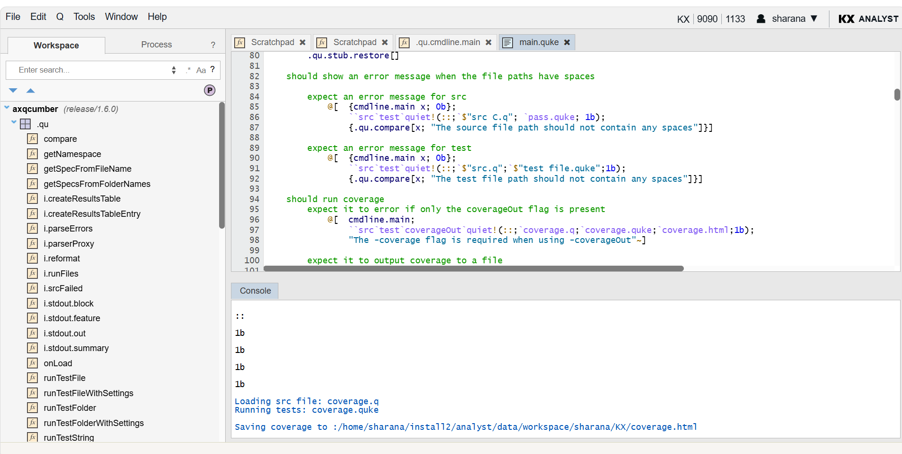
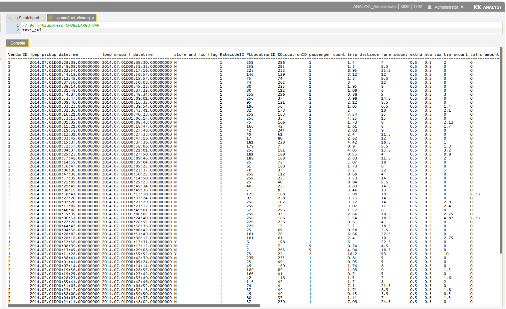
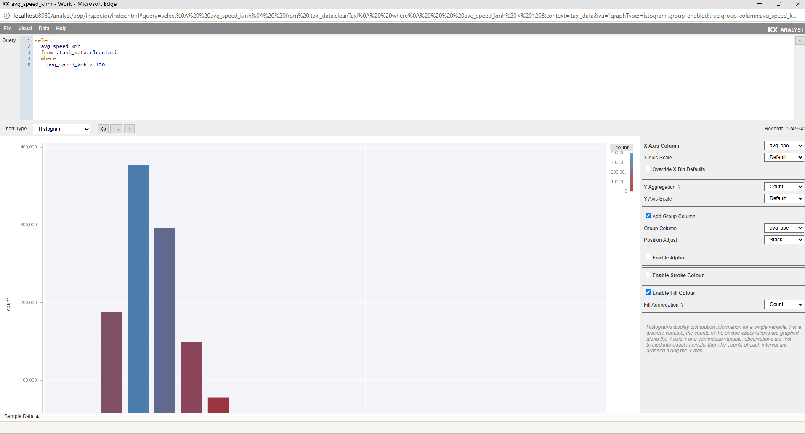

Product Overview & Team Update
Sits on top of kdb+, a powerful database built for handling huge volumes of fast-moving data.
Gives people a visual, easy-to-use interface for the same underlying power, instead of requiring specialist code.
Technical developers write and test code directly inside, while business/analyst users import, transform, and explore data without coding.
Everything runs through the browser, but the actual heavy computation still happens on the fast database behind the scenes.
In short, it makes a highly specialized piece of technology usable by a much wider group of people.
Market and time-series data — trades, quotes, ticks — arrives in huge volume and at high speed. kdb+ handles this, but working with it means writing raw q code by hand.
Only a small number of specialist q developers can build or modify analytics. Every new report or analysis request goes through them.
Slowed decision-making, a backlog of requests, and business/quant teams unable to move at their own pace — dependent on engineering availability.
This is what happens when every analytics request depends on one scarce skill set — watch the queue build:
Click "Play" to see how this backlog builds up in real teams →
A browser-based visual environment for building, testing, and running kdb+ analytics — without needing deep q expertise.
💡 Click any tool below for details & dedicated screenshot attachment
Click "Play" to see how Analyst Orbit handles the same 5 requests — no queue this time →
Data-exploration path: Import data → Transform/clean → Inspect visually → done — no coding required.
select avg price by sym from trade
Access KX Analyst from any browser — no local install
Editor · Visual Inspector · Transformer
Code execution, session state, file management
Local or remote, connected via IPC
Real-time + historical market data
Click "Play" to watch this query travel through Analyst Orbit, step by step →
"You work in the browser. Your code lives in a Git-connected workspace. The heavy computation runs on kdb+ — either locally or on a remote process."
EDIT = change code · Q = run/understand code · TOOLS = use Analyst's toolkit · HELP = learn how it works



Jul 17 – Aug 12
main and the release branch to identify commits missing from the release📊 50+ repos synced · 20+ sanity-tested · Jul 17 – Aug 12
-console command-line argument, bumped default console width to 250ax-libraries-cache has no compiled binaries for Ubuntu 22/24, despite targets.js claiming support.axpnull.arity returning incorrect results (e.g. -2 instead of 2) for a projection of a compositionQuestions?
Tool detailed description goes here...
Business value detailed text...